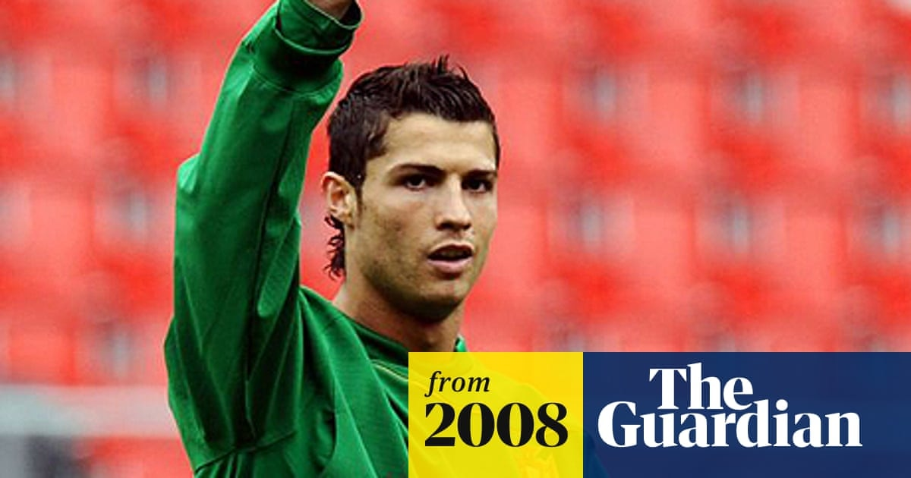

First Exit Storm — Ferguson's 'Keep Him, Sell Rooney' Call
Post-World-Cup exit thoughts: Per SPORTbible and others, Ronaldo had already 'agreed to leave United' after the 2006 World Cup in Germany. Wink-gate had made him public enemy in England, the mood around Old Trafford curdled, and he was desperate to join Real Madrid, who had long courted him.
Real's flirtation: Under Florentino Pérez, Madrid had spent years making eyes at Ronaldo, teasing the move through media leaks and back-channel contact — the 'Galáctico' style of poaching. It worked: Ronaldo's head was already out of Manchester, and United's hold on him was weakening.
Ferguson forces him to stay: Enter Sir Alex Ferguson, who sat Ronaldo down for a heart-to-heart. A 'stay one more year and it'll pay off' promise, plus a mix of arm-round-the-shoulder persuasion and flat authority — and the boss single-handedly parked the transfer.
'At least one more year': BBC at the time logged Ronaldo’s public line: 'I'll stay at United for at least one more year'. A tug-of-war between the manager's authority and the player's wishes — also a classic case of Ferguson's man-management.
The peak that staying produced: Forced to stay, Ronaldo exploded in the 2007-08 season — a Premier League + Champions League double with United, and his first Ballon d’Or. But this 'forced greatness' also laid a longer fuse, one that burned all the way to his eventual 2009 exit.
The start of the soap opera: The 2006 storm opened the multi-year 'Ronaldo to Real' saga. Every summer served up another round of exit rumours; the content feast, jointly laid on by club, player and media, exhausted United fans — early evidence of Ronaldo's 'body at United, heart elsewhere'.
Verdict: Cristiano's first exit storm ended with Ferguson digging in and keeping him. That season was the turning point — the one that carried Cristiano to his first Ballon d'Or and definitive stardom.